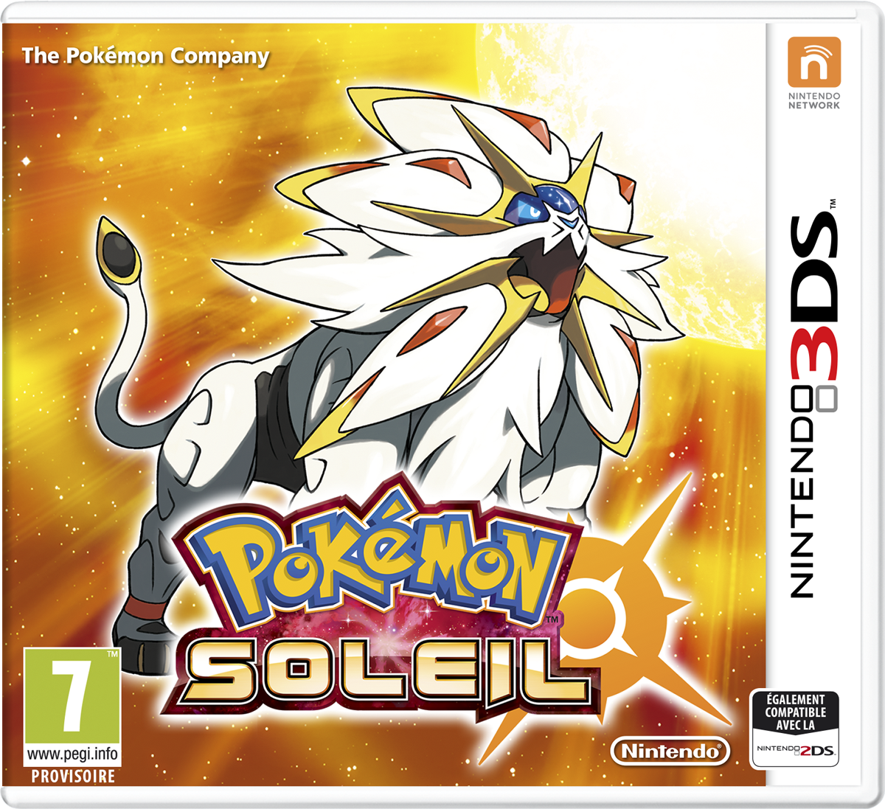
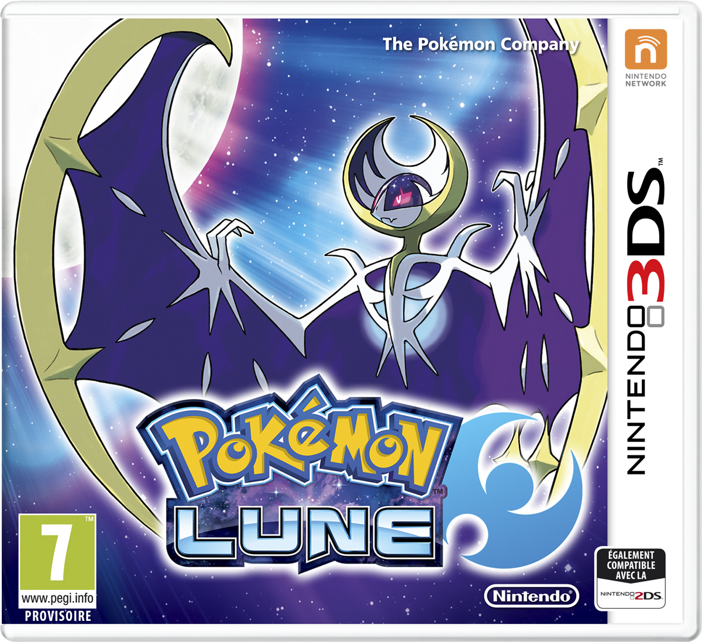

Le jeu se déroule dans la région insulaire et paradisiaque d'Alola, inspirée de l'île d'Oahu, dans l'archipel d'Hawaï. Cette région est composée de quatre îles, ainsi que d'une île artificielle, le paradis Æther. Chacune des îles naturelles est sous la surveillance de Pokémon protecteurs, appelés les Toko ; vénérés par les habitants, ce sont eux aussi qui choisissent les doyens. La première île est Mele-mele, où le héros a déménagé, et son protecteur est Tokorico ; la deuxième île est Akala, dont le Pokémon protecteur est Tokopiyon ; la troisième, Ula-Ula, dont le Pokémon protecteur est Tokotoro ; la dernière s'appelle Poni, dont le Pokémon Protecteur est Tokopisco.
Voir plus dans la fiche détailée...


Le jeu se déroule dans la région insulaire et paradisiaque d'Alola, inspirée de l'île d'Oahu, dans l'archipel d'Hawaï. Cette région est composée de quatre îles, ainsi que d'une île artificielle, le paradis Æther. Chacune des îles naturelles est sous la surveillance de Pokémon protecteurs, appelés les Toko ; vénérés par les habitants, ce sont eux aussi qui choisissent les doyens. La première île est Mele-mele, où le héros a emménagé, et son protecteur est Tokorico ; la deuxième île est Akala, dont le Pokémon protecteur est Tokopiyon ; la troisième, Ula-Ula, dont le Pokémon protecteur est Tokotoro ; la dernière s'appelle Poni, dont le Pokémon protecteur est Tokopisco.
Voir plus dans la fiche détailée...


Le joueur incarne un enfant de Bourg Palette dans la région de Kanto. En allant à la rencontre du Professeur Chen, il tombe sur un Pokémon sauvage inhabituel qui se prend d'affection pour lui, au point de devenir le Pokémon de départ du jeune Dresseur incarné. Le joueur a pour mission de remplir le Pokédex, ce qui l'amène à obtenir les Badges des huit Arènes locales et à croiser le chemin d'une organisation criminelle qu'il décide d'arrêter. Pour remplir son objectif, le joueur doit au final affronter les Dresseurs les plus puissants de la région, le Conseil 4, et partir à la recherche des Pokémon légendaires.
Voir plus dans la fiche détailée...